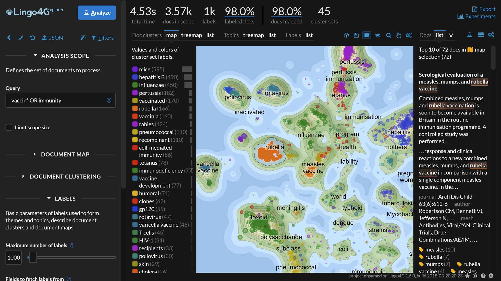
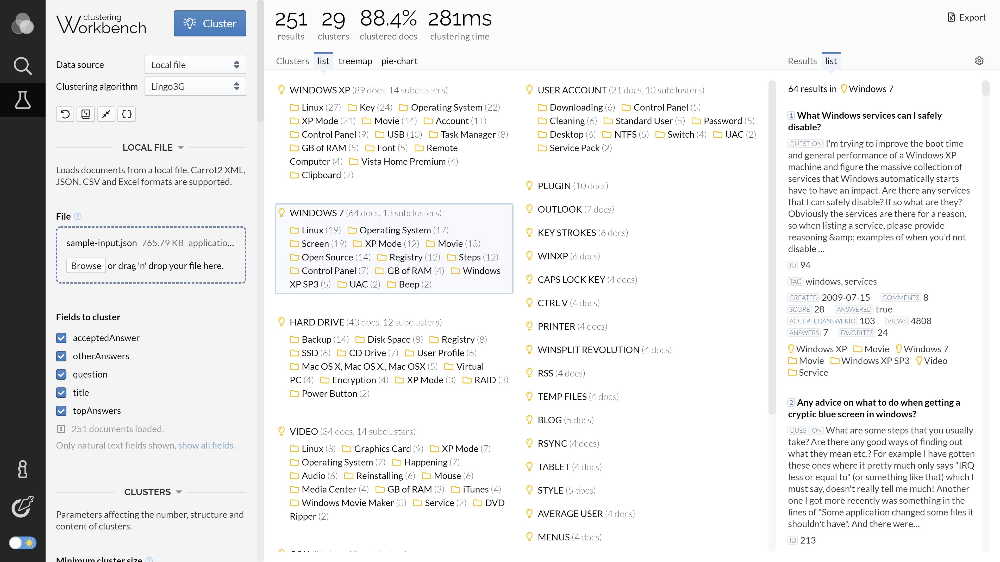
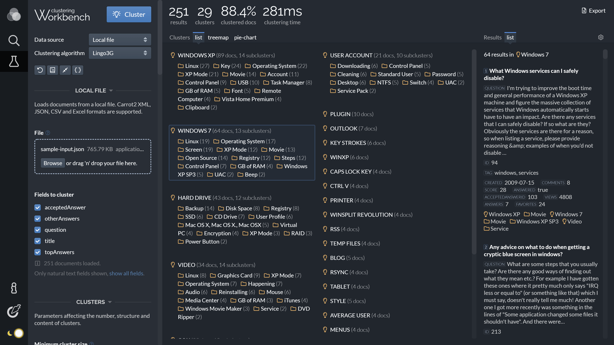
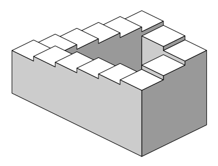

The image pipeline rewrites raster <img> tags into a
responsive <picture> with AVIF, WebP, and fallback
sources, srcsets sized for the article width, and a tiny LQIP background
that holds the aspect ratio while the picture loads. SVG files referenced
by <img> are inlined into the document.
A bare <img> tag is enough — no shortcode or template
directive needed. The pipeline picks it up at build time.

Wrap the image in <figure> for a caption and, in this
theme, click-to-zoom. The full-viewport view animates with the View
Transitions API where supported.
Provide two <img> tags marked light and
dark. The active theme decides which one is visible — no
JavaScript, no flicker.


An <img> pointing at an SVG file is replaced with the
file's <svg> element inlined into the document, so
CSS variables and theme switches reach into the diagram itself.
